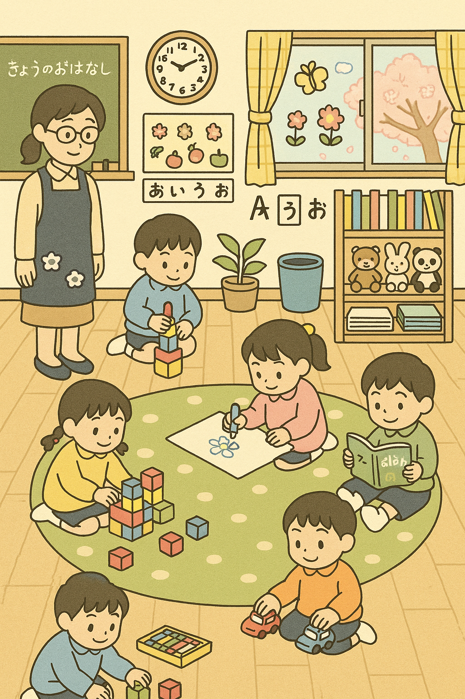
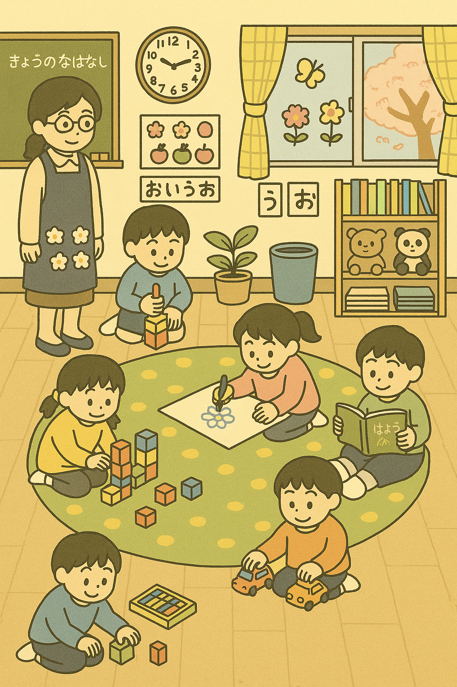
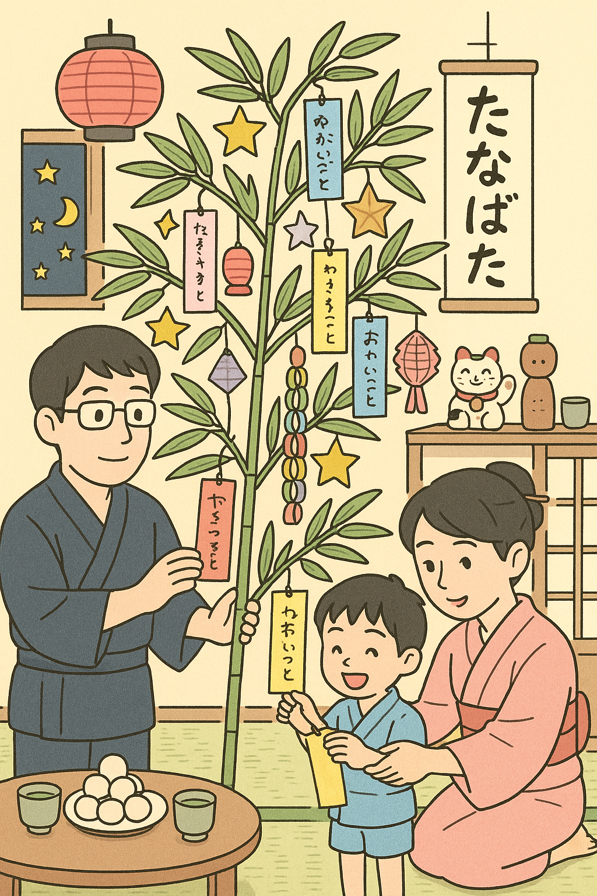
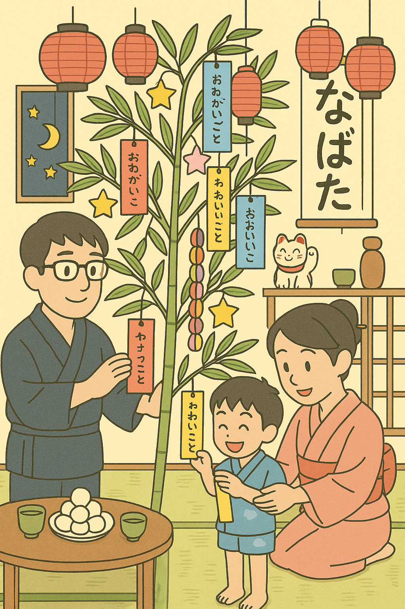
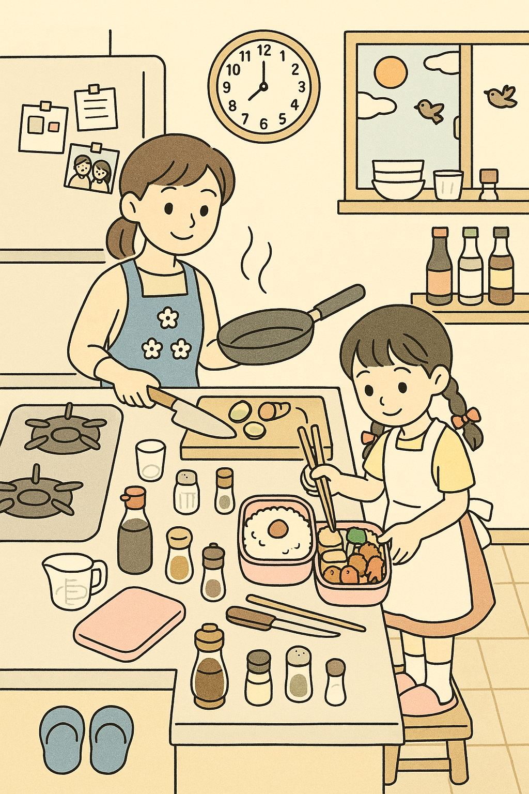
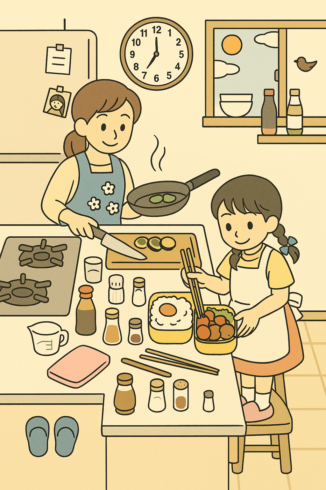
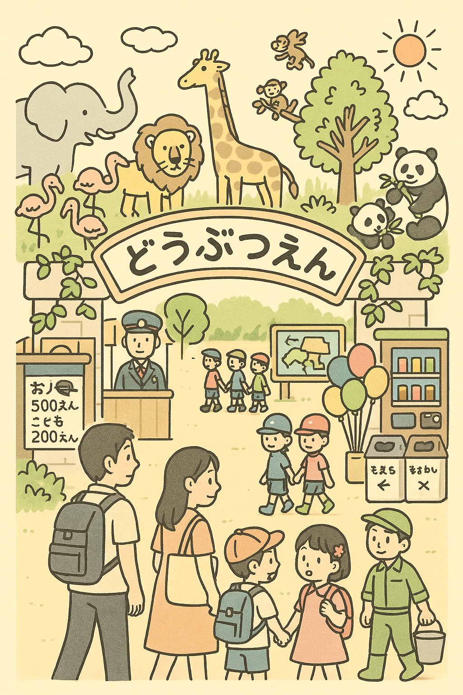
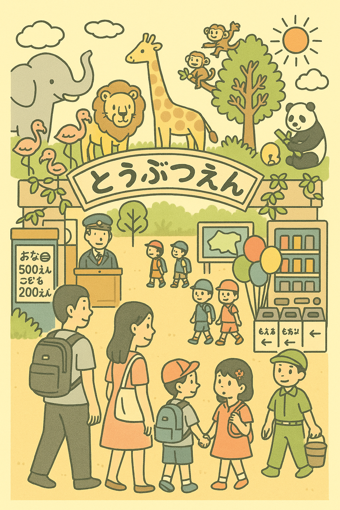
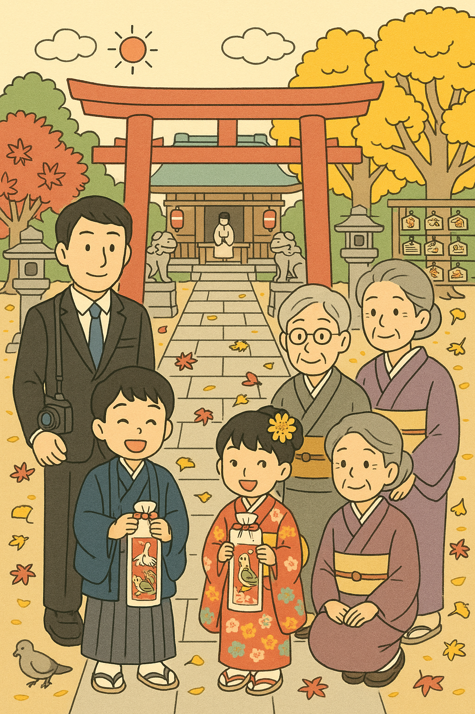
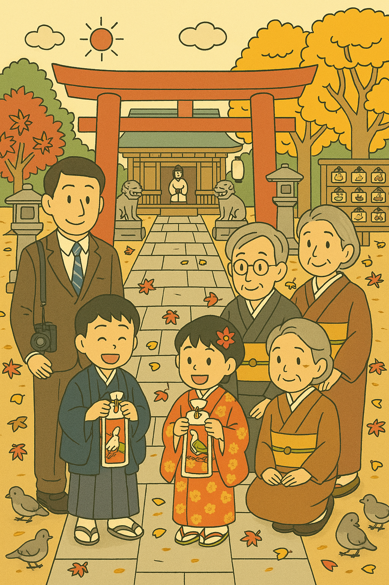

1. 幼稚園の自由時間 (園児5人＋先生)

ひだり (もと)

みぎ (まちがいあり)
指示した10の微差
- 中央の女の子のリボンを黄色→赤
- 積み木の数 7→6個
- 時計の長針 15分→20分
- クレヨンの本数 12→11本
- 名前カードの「あ」→「お」
- 黒板「きょうのおはなし」→「きょうのなはなし」
- 先生のエプロンの花柄 3→4個
- 掲示のチョウチョ 3→2匹
- ミニカーを左右逆向き
- ラグの水玉 白→黄
2. 七夕の飾り (家族3人 + 笹 + 飾り多数)

ひだり

みぎ
指示した10の微差
- 青い短冊 2→1枚
- 父のメガネ 丸→四角
- お団子 6→5個
- 夜空の星 7→6個
- 輪つなぎ 7色→6色
- 招き猫の挙げる手 左→右
- コケシ 2→1体
- 男の子の甚平に雲マーク1つ追加
- ちょうちん 2→3個
- 書道作品「た」→「な」
3. おべんとうづくり (キッチン)

ひだり

みぎ
指示した10の微差
- 唐揚げ 4→3個
- ミニトマト 2→3個
- たこさんウインナー 2→1個
- お弁当箱 ピンク→黄色
- 女の子の片方のリボン 赤→青
- 時計 7:30→7:45
- 冷蔵庫のメモ 3→2枚
- きゅうり 3→4切れ
- 調味料瓶 3→2本
- 小鳥 2→1羽
4. 動物園の入口 (家族＋動物多数＋看板)

ひだり

みぎ
指示した10の微差
- 看板「どうぶつえん」→「とうぶつえん」
- 子供の帽子 緑→黄色
- パンダ 2→1頭
- 風船 7→6個
- 女の子のヘアピン 2→1個
- 自販機のジュース 6→5本
- サル 3→4匹
- 看板の矢印 5→4本
- フラミンゴ 5→4羽
- ゴミ箱 2→3個
5. 七五三のおまいり (家族6人＋神社)

ひだり

みぎ
指示した10の微差
- 女の子の髪飾り 黄→赤
- 父のネクタイ 無地→縞模様
- もみじ落ち葉 8→7枚
- 絵馬 10→9個
- 提灯 2→1個
- 狛犬の口 両方とも開けた状態
- 祖母の着物 紫→茶
- 銀杏の木 2→3本
- 鳩 2→3羽
- 雲 3→2つ